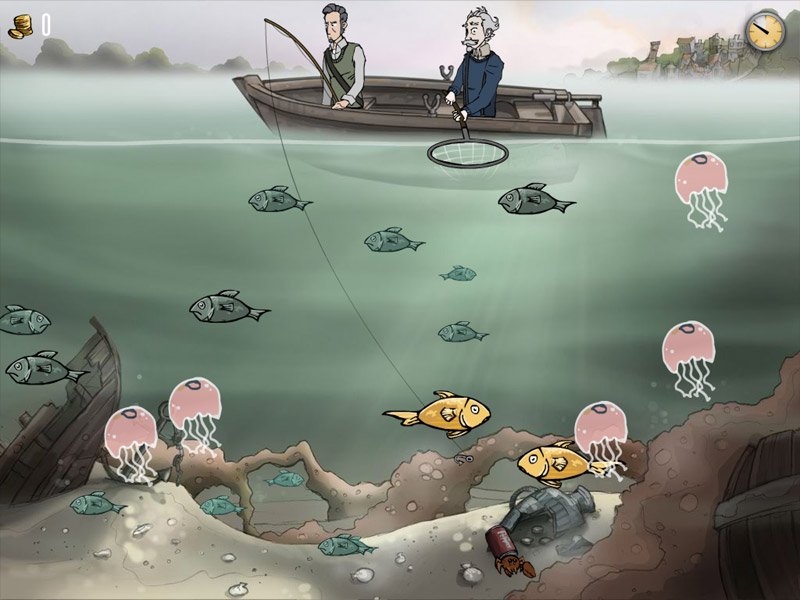

fishing

wavetamer
boot (main)
fishing_000
wavetamer: Congratulations Nigel, you caught a boot!
snapper (main)
fishing_001
wavetamer: Wow, a red snapper! This might be the last one in these waters!
intro (main)
fishing_002
wavetamer: Ahoy Nigel! Here's what you need to know ...
fishing_003
wavetamer: A common bass is worth up to 10 coins.
fishing_004
wavetamer: Golden breams are worth 50 coins!
fishing_005
wavetamer: To catch a fish, place your hook under its mouth and then pull it up into my net.
fishing_006
wavetamer: Beware of jellyfish! They'll stun a fish on your line, and catching one will spoil part of our catch.
fishing_007
wavetamer: Time is money! The faster you can pull fish into my net, the more they're worth.
fishing_008
wavetamer: You have 30 seconds to catch all the fish you can. Catch 300 coins worth of fish and the take is yours!
events (main)
fishing_009
wavetamer: Get Ready!
fishing_010
wavetamer: Fish!
fishing_011
wavetamer: Time Up!